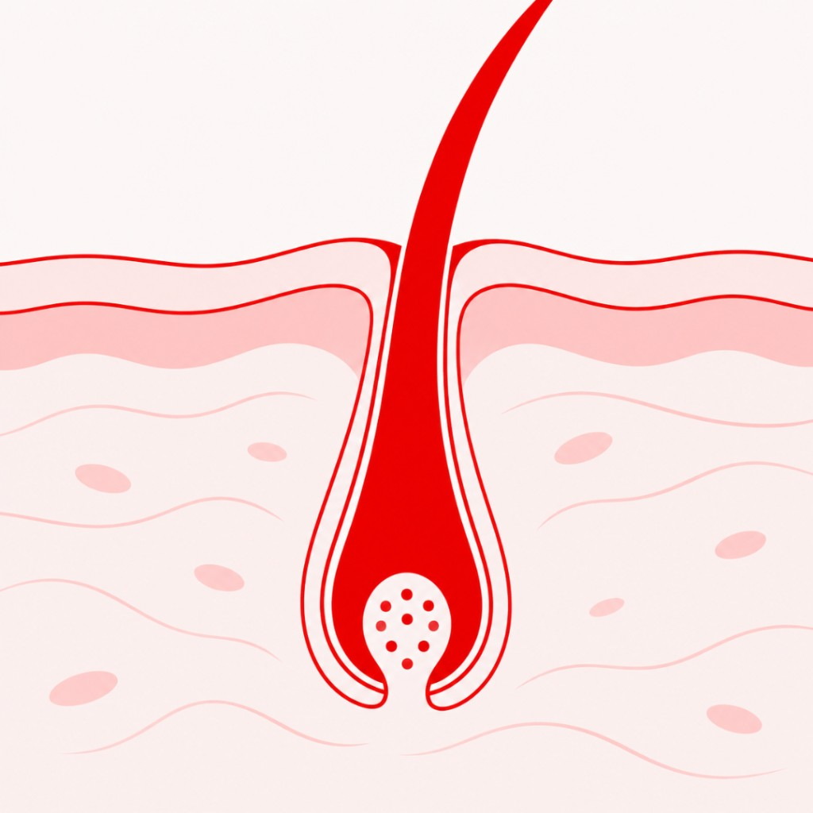
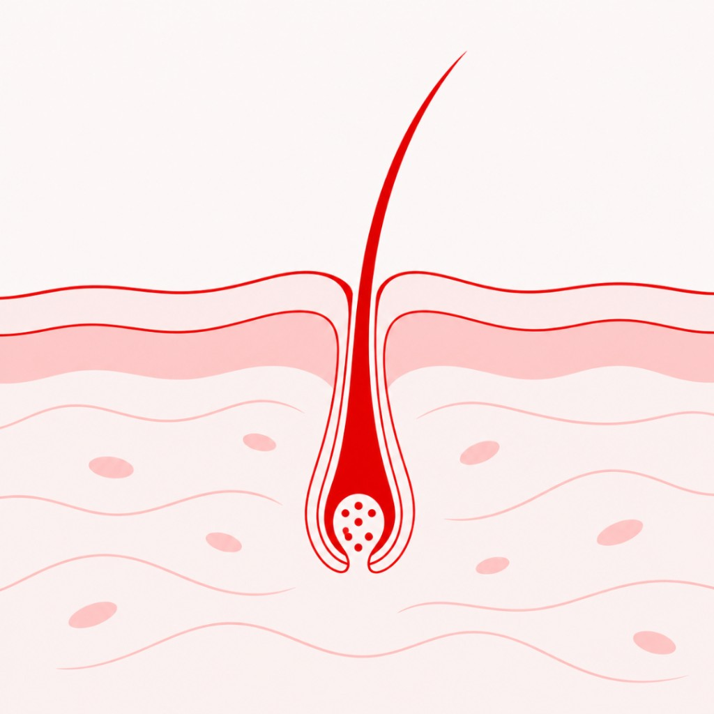

We studied the most popular hair serums of 2026. Most missed the most important part of your hair.
One thing to always remember: the hair you can see is not alive.
It can’t absorb anything. It can’t “grow stronger.” Every product that promises thicker, fuller hair has to target the part of hair you can’t see: the follicle, under your scalp, where hair is actually made.
Hair science
At the base of each follicle are the dermal papilla cells. They send signals that regulate the growth cycle (when a hair grows and how long it keeps growing), and influence how thick each hair grows.
They work with other cells within the follicle, and rely on the scalp environment around them for oxygen and nutrients.
When the dermal papilla cells lose steam, or the scalp environment can’t keep them properly supplied, there are two ways it shows up in your hair:
- Thinning: The follicle shrinks and each new hair grows in finer and shorter than the last.
- Shedding: More follicles shift to the resting phase at the same time, and more hairs fall out at once.
This is what it looks like underneath (illustrations are simplified for educational purposes):
|

|

|
| Healthy follicle |
Shrinking follicle |
What does that mean for you? Healthy hair needs healthy dermal papilla cells and a healthy scalp environment. If a product skips one or both of these, it’s a sign that it’s not the best product for hair thinning.
Let’s see which products pass the test →
See the final results here.
These are the most popular hair thinning serums of 2026.
Which ones are selling real results, and which ones are selling empty promises?
| Category | Result |
|---|
| Targets dermal papilla cells? | Yes |
| Targets scalp environment? | Yes |
| Proof of efficacy? | Clinical trial |
Many brands start with the same catalog of known hair ingredients, build a “new” formula, and end up selling a product that looks just like the rest.
Instead of doing what the rest of the industry had been doing for years, RE:YOU’s team of PhD scientists developed their own novel ingredients. They screened roughly 20 million molecules, and developed three new molecules that directly support the hair follicle system:
- NOVOGRO™-623 and NOVOGRO™-624 energize and revitalize the dermal papilla cells.
- NOVOGRO™-273 restores the scalp environment, supporting proper oxygen and nutrient flow to the follicle.
And to prove its efficacy, RE:YOU ran a 190-person, double-blind clinical trial against topical minoxidil, the current gold standard treatment for hair thinning. This is the most rigorous trial in the category we’ve seen. At the 90-day checkpoint:
- 97% saw less shedding (comb test)
- 89% said their hair looked better (self-reported)
- 50% more hair growth than minoxidil (machine-measured)
TBB TLDRThe only serum intentionally built to support dermal papilla cells in the hair follicle as well as the surrounding scalp environment. Plus, the most rigorous clinical trial in the category to show why it wins.
| Category | Result |
|---|
| Targets dermal papilla cells? | No |
| Targets scalp environment? | Yes |
| Proof of efficacy? | Clinical trial |
Minoxidil is still the over-the-counter gold standard, and it has decades of clinical evidence behind it. It supports hair growth mainly by widening blood vessels and increasing nutrient flow toward the follicle — a scalp-environment story, not a dermal papilla-cell one.
The catch is the lease. Results typically require staying on it. Stop, and the gains often recede. That is why this lands as temporary results: the science is real, the effect is not designed to last after you quit. The initial “dread shed,” scalp irritation, and pet-toxicity warning are also part of the fine print people skip.
TBB TLDRClinically proven, but it does not target dermal papilla cells, and the results depend on staying on it. Real science with a temporary lease.
Verdict: Empty Promises
The Ordinary Multi-Peptide Serum for Hair Density
Check Availability
| Category | Result |
|---|
| Targets dermal papilla cells? | Claimed by ingredients |
| Targets scalp environment? | Claimed by ingredients |
| Proof of efficacy? | No published studies |
At around $24, this serum has the lowest barrier to entry for anyone looking for their first hair serum. It features five licensed ingredient complexes from five different suppliers (Redensyl, Procapil, Capixyl, Baicapil, AnaGain) plus caffeine.
Let’s talk about these ingredient complexes. These are not built by the Ordinary, nor are they tested by the Ordinary. Each complex comes from an outside supplier, and whatever data that supplier uses for efficacy claims. The key piece that’s missing is proof whether the final formulation that you buy, does what the label says. Think of it as an all-star team: five star players who’ve never practiced together.
And the fact that there’s no published clinical trial doesn’t help clarify anything.
TBB TLDRBorrowed ingredients, and a formulation missing efficacy claims and proof. Relatively inexpensive, but likely not worth trying something with this little information or evidence behind it.
| Category | Result |
|---|
| Targets dermal papilla cells? | No |
| Targets scalp environment? | Claimed by ingredients |
| Proof of efficacy? | Consumer surveys |
Vegamour flexes its plant-based formula: red clover, mung bean, turmeric and caffeine. Though not highlighted or explained on their product page, most of these ingredients are commonly cited to support the scalp environment: soothing irritation and blocking hormones linked to thinning. Peptides are another featured ingredient, but (again) not explained.
Their real world proof leans on customer questionnaires rather than measured clinical results — okay for qualitative and subjective reads, but not useful for comparing products or measuring efficacy.
TBB TLDRReads like a plant-based scalp serum; nothing in it is shown to reach the dermal papilla cells. Backed by how customers feel rather than anything measured.
| Category | Result |
|---|
| Targets dermal papilla cells? | No |
| Targets scalp environment? | Yes |
| Proof of efficacy? | Expert grading |
OUAI stands out by highlighting that your scalp is skin, and features ingredients found in popular skincare products (most obvious would be hyaluronic acid). Their main prop point for customers is about creating a healthy environment for hair.
That’s a scalp-environment story, but nothing in it is aimed at the dermal papilla cells living in the hair follicle.
In terms of efficacy claims, the fine print is worth a look. “100% of users showed improvement” comes from a 16-week study of 32 people, graded by experts on how full and thick hair looked. There was no placebo or comparison, no machine grading, and likely no experimental setup explained.
That’s probably why they call it a “study” and not a “clinical trial.” See what they did there?
TBB TLDRA scalp serum applying skincare tactics for hair growth. Formulation doesn’t consider the cells in your hair follicle, and efficacy claims come from a seemingly loose “study,” not a rigorous clinical trial.
Final Results
| Product |
Verdict |
Targets dermal papilla cells? |
Targets scalp environment? |
Proof of efficacy? |
|
|
Real Results |
Yes |
Yes |
Clinical trial |
|
|
Temporary Results |
No |
Yes |
Clinical trial |
|
|
Empty Promises |
Claimed by ingredients |
Claimed by ingredients |
No published studies |
|
|
Empty Promises |
No |
Claimed by ingredients |
Consumer surveys |
|
|
Empty Promises |
No |
Yes |
A study |
The Bottom Line
We can learn a lot once we look past the pretty bottles, curated product pages, and targeted ads.
Almost every serum on this list works on the scalp environment. Only one was built for the dermal papilla cells too, and it outperformed the industry gold standard in a head-to-head clinical trial.
If you’ve tried a serum before and felt like nothing happened, it’s not just a “you problem.” The more likely reason: the product was not made to treat your hair thinning in the first place.